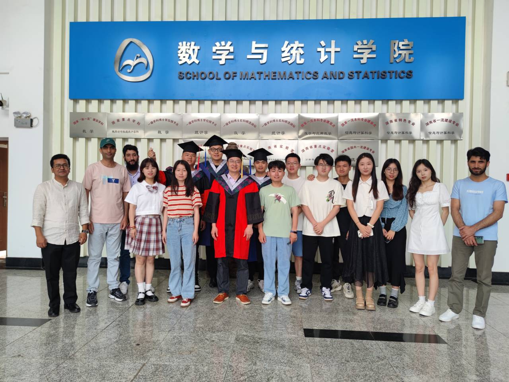

Hong Wang, Ph.D. (王洪)
副教授 |
 |
To Prospective Students: I am always looking for students with high motivations and strong coding skills to join my research group or work with me as summer interns.
Students are expected to work closely with me on several research projects. Applicants with a degree in related fields (e.g., STAT/CS/Mathematics) are preferred.
Research backgrounds in statistics, data mining, big data, and machine learning, are desired.
If you are interested, please email me your application materials (e.g., Curriculum Vitae, Publications, GitHub/GitLab Accounts, Undergraduate/Graduate Transcripts, Personal Statement).
NOTE: Unfortunately, due to the volume of emails, I will not respond to all of them.
个人简历
王洪，男，博士，副教授，博士生导师。文学学士（中南大学英语专业，导师：韩景泉教授）、工学硕士（湖南大学计算机应用技术专业，导师：孙星明教授）、理学博士（中南大学统计学专业，导师：许青松教授）、计算机科学与技术博士后（中南大学，合作导师：王建新教授）、生物统计专业博士后（美国加州大学洛杉矶分校UCLA， 合作导师：Gang Li教授）。国家认证高级程序员（2003年）、系统分析师（2004年）。主要从事机器学习和生物统计等方面的研究工作。
在Statistics in Medicine、Artificial Intelligence in Medicine 、Knowledge-Based Systems、Reliability Engineering and System Safety等统计和机器学习期刊发表SCI论文30余篇，获软件著作权1项。
主持和参加国家社科基金、国家自科基金项目4项，主持全国统计科研项目重点项目、教育部人文社科基金等省部级目4项，主持企业合作横向课题多项。
是30余种SCI杂志的审稿人，如Statistics in Medicine、Statistica Sinica、Computational Statistics and Data Analysis等知名统计期刊，Artificial Intelligence in Medicine、Computers in Biology and Medicine等知名医学信息学期刊，Neural Networks、Expert System with Applications、Information Sciences、Knowledge-Based Systems等知名机器学习期刊。
Team News [ ]
]
- [11/2023] 2021届硕士生张转（现为2023级博士生）的硕士论文获湖南省优秀硕士学位论文！祝贺！
- [10/2023] 北京大学宋晓军教授应邀来长沙讲学！欢迎！
- [10/2023] 香港中文大学统计系宋心远教授应邀来长沙讲学！欢迎！
- [09/2023] 2023级硕士张绍阳、黄燕妮、梁嘉轩加入课题组！欢迎！
- [09/2023] 2023级博士张转加入课题组！欢迎！
- [09/2023] 博士毕业生程学伟入职湖南师范大学！祝贺！
- [09/2023] Abba becomes a post-doc at CSU！Congratulations！
- [08/2023] One paper accepted by Computational Statistics！Congratulations！
- [07/2023] 硕士毕业生周含璞、王思政、邹易分别入职长安汽车、江苏省教育厅、**战区！祝贺！
- [06/2023] 云南大学数学与统计学院唐年胜教授应邀来长沙参加中南大学名师名家论坛！欢迎！
- [05/2023] 博士生程学伟、Abba通过博士学位答辩！祝贺！
- [05/2023] 硕士生周含璞、王思政、邹易通过硕士学位答辩！祝贺！
- [04/2023] 厦门大学统计学与数据科学系钟威教授应邀来长沙讲学！欢迎！
- [02/2023] One paper accepted by Quality Technology & Quantitative Management！Congratulations！
- [01/2023] 王洪老师获中南大学研究生教学质量优秀奖！Congratulations！
- [12/2022] 2021届硕士生洪铃的硕士论文获湖南省优秀硕士学位论文！祝贺！
- [12/2022] One paper accepted by Proceedings of the Institution of Mechanical Engineers, Part O: Journal of Risk and Reliability！Congratulations！
- [11/2022] One paper accepted by Computer Methods and Programs in Biomedicine！Congratulations！
- [10/2022] One paper accepted by R journal！Congratulations！
- [7/2022] 2022届硕士毕业生田兵被厦门大学录取为博士生！2022届硕士毕业生刘香羽、周益安分别入职腾讯和平安银行！祝贺！！
- [7/2022] One paper accepted by Statistics and Probability Letters！
- [7/2022] One paper accepted by Statistics in Medicine！Congratulations！
- [6/2022] One paper accepted by Applied Intelligence！Congratulations！
- [6/2022] 中南财经政法大学赵慧教授应邀做线上报告！欢迎！
- [6/2022] 湖北经济学院张耀峰教授应邀做线上报告！欢迎！
- [6/2022] 中国人民大学许王莉教授应邀做线上报告！欢迎！
- [6/2022] 南方医科大学陈征教授应邀做线上报告！欢迎！
- [6/2022] One paper accepted by Applied Stochastic Models in Business and Industry！Congratulations！
- [5/2022] 江西财经大学罗良清教授应邀做线上报告！欢迎！
- [5/2022] 美国密苏里大学统计系孙建国教授应邀做客中南大学名师名家论坛！欢迎！
- [3/2022] One paper accepted by Reliability Engineering and System Safety！Congratulations！
- [12/2021] 厦门大学钟威教授应邀做线上报告！欢迎！
- [11/2021] 厦门大学方匡南教授应邀做线上报告！欢迎！
- [11/2021] 北京大学邓明华教授应邀做线上报告！欢迎！
- [7/2021] One paper accepted by R Journal！Congratulations！
- [7/2021] 2021届硕士张转、申贞远入职顺丰科技！祝贺！
- [7/2021] 2021届硕士张转获评湖南省优秀毕业生！祝贺！
- [3/2021] One paper accepted by Journal of Statistical Computation and Simulation！Congratulations！
- [6/2020] 2020届硕士洪铃入职宁波银行！祝贺！
学术服务
Journal Reviewer
- [Reviewer] Neural Networks，Chemometrics and Intelligent Laboratory Systems, Mathematical Biosciences and Engineering, Artificial Intelligence in Medicine, The R Journal, Knowledge-Based Systems, Expert Systems with Applications, Information Sciences, Journal of Risk and Reliability, 2023.
- [Reviewer] Frontiers in Big Data, Frontiers in Artificial Intelligence, Scientific Reports，BMC Medical Research Methodology，Artificial Intelligence in Medicine，Computers in Biology and Medicine, Statistica Sinica, BMJ Open, Medicine, Cancer Epidemiology, Frontiers in Cardiovascular Medicine,Alexandria Engineering Journal,AIMS Mathematics, Chemometrics and Intelligent Laboratory Systems, Measurement, BMC Cancer,Frontiers in Aging Neuroscience, Frontiers in Cardiovascular Medicine, 2022.
- [Reviewer] Artificial Intelligence in Medicine, Communications in Statistics - Theory and Methods, PeerJ, Journal of Experimental and Theoretical Artificial Intelligence, Algorithms, Computers and Industrial Engineering, Lifetime Data Analysis, Information, International Journal of Operational Research, Algorithms, International Journal of Environmental Research and Public Health, Sensors, Data, Scientific Reports, Optik,Neural Networks, 2021 and before.
Others
- [Grant Reviewer] Australian Research Council, 2023.
- [Guest Associate Editor] Mathematics, 2023-2024.
- [Guest Associate Editor] Frontiers in Big Data/Frontiers in Artificial Intelligence, 2022-2023.